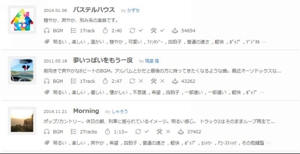
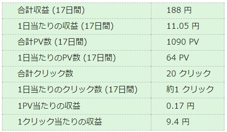

| まん坊の浮遊【上巻】：YouTubeアフィリエイトで稼ぐ！100日間挑戦記 | |
| まん坊 | |
| UNKNOWN (2017) | |
この本は、長年あれやこれやとその時旬のアフィリエイトノウハウを購入、実践してきたもののそのほとんどで稼げなかった40代後半独り暮らしのオヤジである僕"まん坊"が心機一転して、100日間と期間を決めてYouTubeアフィリエイトでどこまで頑張れるのか、その全記録を公開したものです。
もともと、僕の勤め先というのは個人経営の飲食店でして、雇われ店長という立場の多忙さにどれもこれも長続きせず、特にここ2年ほどは全くといっていいほど何もしていませんでした。
それがなぜ今さらアフィリエイトなのか？
昨年、訳あって知り合いの飲食店に転職したんです。
ありがたいことに給料はそれまでとほぼ変わりなく、勤務時間は以前より短くなってなったので時間には余裕が出来たのです。
「この時間を無駄に過ごすのはもったいない！」
そう思い、2017年2月1日からアフィリエイトに再挑戦することにしました！！
ところで、ネットで『稼ぐ』系の情報を検索したことってありますか？
たとえば「ブログ 10万円稼ぐ」とかのキーフレーズです。
僕はしょっちゅうやってたんですが（笑)
「ブログで10万円稼ぐ方法を教えます！！」
「僕がブログで10万円稼げた訳」
「ブログで10万円稼ぐ為の3つの方法！」
みたいなタイトルのサイトやブログが目白押しですよね！？
ちょっとキーワードを変えれば、10万円でなくて30万円だったり100万円なんてのもあります。
けれども、僕には一から挑戦して月10万円を稼ぐ自信はありません。5万円も自信ナシです。
5万円とか10万円とかの金額を目標にしてしまうと、いつまで経ってもゴールにたどり着けないかもしれません。
それどころか、途中で挫折して止めてしまうかも。いや、その可能性大です。
実際に何年もそんなことばかりを繰り返してきた僕です。
なので、今の僕の身の丈に合った目標は5万円や10万円とかの金額ではなく、確実にやり切れる(と思う)100日間という日数をゴールにした実践だと思ったわけです！
よくネットの世界では「３ヶ月ぐらいは続けないとどんなノウハウでも成果はでない」と言われるので、最低三カ月以上と考えキリよく100日間。
もしも100日後に何らかの成果が出ていたら、その時になって次の目標を考えればいいかなと。
その目標はもっと大きなものに間違いないでしょうから。
『YouTubeアフィリエイトで稼ぐ！ 100日間挑戦記』はそのための第一歩なのです。
そして、YouTubeのみならずいわゆるインターネットビジネスと言われているものに少しでも興味のある方や、これから挑戦してみようと思われている方の参考になれば幸いと思い、僕はこの本を書いています。
僕が挑戦するのは 『 YouTube アフィリエイト 』 です
まずは、なぜ『アフィリエイト』なのかについてお話ししておきたいと思います。
アフィリエイトを副業に選んだ理由は、もともと本職があってその上で収入を増やそうと思ったら
1、投資する
2、隠れてアルバイトする
3、内職する
くらいしかアフィリエイトを始める前の僕には思いつきませんでした。
今のご時世、銀行に預けてもたいして増えませんしね。
ところが
1、投資する
これはそもそも元手がありません。
不動産のようなものはもとより株、FX、貴金属、最近ではビットコインなどもそうですが、とても僕のようなビールを我慢して発泡酒(第3のビールはどうも苦手です)といった人種には無理な相談です。
さらに、元金を割る可能性もありますし。
実際、もう10年くらい前になるでしょうか！？ 僕の身近で、全財産のかなりの部分を株に投資していてリーマンショックに遭遇し途方に暮れた知人もいました。
2、隠れてアルバイトする
ありがたいことに転職後の今でこそ週休2日で働いていますが、飲食業では当たり前のごとく当時は年間休日60日あるかないかで週70時間以上の勤務時間でしたから、これも難しそうでした。
1～2ヶ月位ならまだしも半年、1年と休日なしでは、いくら独り身で仕事以外の時間が自由に使えるとはいえゾッとします。
3、内職する
今風に言うと『在宅ワーク』ですが、効率悪すぎです。シール貼りとか...。
ですが、仕事を請け負うという考え方ではなく、一時期流行った『週末起業』的な考え方をすると以前は「ヤフオク」、最近では「せどり」などの転売ビジネスが結構人気のようで個人で10万円ほど稼ぐ人は結構いると聞きます。
しかし、仕入れ費用が掛かり、在庫を常に抱え、物によっては売れないものもあるでしょうし、包装や発送といった作業があるので売れば売るほど身体的にはしんどくなっていく負のスパイラルがあります。
せどり等で大きく稼いでいる方はアルバイトを雇ったりしているようですが、それはそれで人の管理という負担が上積みされてしまいます。
だから、アフィリエイトなのです。
仕入れ無し、在庫なし、売れ残れなし、包装や発送の手間も無し。
他人さまの商品を紹介して、購入されれば紹介料を頂く。
ただそれだけのシンプルなビジネスモデルが個人の副業にはピッタリなのです。
仕入れや発送に外へ出る必要もなく、パソコン操作だけでビジネスが成り立つので、
僕は最初からアフィリエイト一択でした。
一口に「アフィリエイト」と言っても実はけっこうな種類があるので、簡単に整理しておこうと思います。
サイト(ホームページ)を作って、商品を紹介するアフィリエイトです。
SEO(検索エンジン最適化)と呼ばれるテクニックを使って、狙ったキーワードで上位表示させてアクセスを集めて任意の商品を紹介していきます。
アフィリエイターの間では、サイトアフィリエイトのことを単に『SEO』と呼ぶこともあります。
ブログを運営しながら更新していく記事の中で商品を紹介します。
サイトアフィリエイトと似ていますが、どんどん記事数が増えてそれに伴ってアクセスが増えていくのが特徴です。
大きく分けると、商品ありきでその商品やジャンルの記事を重ねていく場合と、運営者の趣味や日記的なブログの中で商品を紹介していくスタイルがあります。
これもサイトアフィリエイトに似ていますが、検索結果の上や下に設けられている『広告枠』にお金を払って表示させるアフィリエイト手法です。
表示されるだけでは費用は発生しませんがクリックされると課金されるため、思うように商品が売れないと赤字になるリスクがあります。
メールマガジン(メルマガ)を配信して、商品を紹介していくアフィリエイト手法です。
基本的に文字のみのメールで商品を紹介していくため相応の文章力が求められます。
また、何らかの媒体を使ってあらかじめ読者を集めなければいけない必要もあり、アフィリエイト初心者には敷居の高いアフィリエイト手法と言われています。
TwitterやFacebook、LINEといったSNSを利用して行うアフィリエイト手法です。YouTubeもこの仲間と言えるでしょう。
昨今はSNSを全く利用しない人の方が珍しいので、比較的とりかかりやすい手法ですがコロコロと規約が変わったりする為、長期的に安定した収入は難しいと言えます。
以上が一般的に言われるアフィリエイト手法で、媒体別に分類してみたわけですが、それとは別に
● ASPアフィリエイト
● Adsense(アドセンス)アフィリエイト
といった分類の仕方があります。
ASPアフィリエイトとはASP(アフィリエイト・サービス・プロバイダー)から任意の商品を選んで紹介し、商品が売れたら紹介料が発生する仕組みで成果報酬型とか成功報酬型と呼ばれます。
サイトやブログの運営者が広告スペースをGoogleに提供する広告配信サービスで、媒体や訪問者に合わせた広告をGoogleがそのスペースに表示します。
クリック課金型と言われ、広告をクリックするだけで収益が発生するため『ブロガー』と呼ばれる人たちのブログではしょっちゅうお目に掛かります。
僕がこれから挑戦するのはSNSアフィリエイトの一つである『YouTube アフィリエイト』です。
YouTubeで稼ぐと言えば、ご存知『YouTuber(ユーチューバー)』。
いわゆるレビュー系YouTuberと言われる人たちの中には動画の中で特定の商品を紹介して、動画下の説明欄にある商品リンクをクリックして購入を促すASPアフィリエイトを絡める手法もありますが、
レビュー系を含めて彼らYouTuberの収益のほとんどは動画再生中現れる広告をクリック、または冒頭に流れる広告視聴によってなのです。つまりはAdsenseアフィリエイトということになります。
僕が挑戦する『YouTube アフィリエイト』も全く同じ手法です。
ですので『YouTube Adsense』と言ってもいいですし、実際そういう呼び方をされることもあります。
おおむね再生回数あたり一定の割合でクリックされるので、多くの人に見てもらえればそれだけ収益が増えます。「1再生当たり0.1円」といったことがネットでは言われているようです。
それが本当ならば、よく名前を聞く著名YouTuberクラスだと1動画の再生回数が10万回を超えるので、10万×0.1円＝1万円ってことになります。
もっともそこまで稼げているYouTuberは本当にほんの一握りで、その他大多数のほとんど稼げていない『底辺ユーチューバー』がゴロゴロしてます。
と、他人事のように言っていますが、僕も100日後にはお仲間になっているかも...。
ほぼ無料でできる
本格的な顔出しYouTuberの場合はカメラや照明、それに編集ソフトにお金をかける必要がありますし、当然パソコンも高性能でなければいけません。
場合によっては仕入れ費用や交通費等も必要です。
ところが今回僕が実践するような、話題のネタや画像・音声素材を探してきてパソコン上で編集して動画を作る場合には普通のパソコン一台あればOKです。
収益を得やすい
サイトやブログアフィリエイトの場合、新たに立ち上げてから数日ではまったく訪問者が来ないのはざらですし、そもそも検索エンジンに認知されてなかったりします。ましてや商品が売れるなんて一体いつのことやら...？
その点、YouTubeの場合は毎日コツコツと動画をアップしていれば間違いなく数日の内にはどなたかに再生されて、それに伴って収益も出るようになります。
そしていったん収益が出だすと金額の大小は別として、ほぼ毎日のように収益が上がります。
モチベーションを保ちやすい
上の「収益を得やすい」と関連しますが、毎日のように収益が上がるので日々の作業が楽しくなります。
サイトやブログアフィリエイトですと商品によっては数千円の報酬のものも多いので売れれば大きな金額になりますが、運悪く1ヶ月...そして2か月たっても全く売れなかったりするとさすがに続きません。
諦めてやめてしまいます。
よくあるパターンです。僕のお得意でしたから（笑）。
規約違反にはペナルティーがある
よくあるのが、著作権侵害です。繰り返し行うとアカウント停止となり、収益『0円』になってしまします。
僕の経験でも、とある動物ショーをスマホで撮影して甥っ子に見せてあげようとYouTubeに投稿したところ、会場内で流れていた音楽の著作権侵害とのことでペナルティーはありませんでしたが警告がありました。
このように気が付かないでうっかりという場合もあるので著作権侵害には特に神経を使った方がいいでしょう。
テレビ番組を編集してアップしているチャンネルがありますが、見つかっていないだけで明らかな規約違反です。
またアダルト関連についても厳しいです。
すべての権限がYouTubeにある
たとえペナルティーを受けていなくてもYouTubeが「ふさわしくない」と判断した動画には広告が配信されませんし、問題のない動画であってもすべての再生で広告配信はされません。
こちらでどの広告を配信するかは決められませんし、聞くところによると1クリック当たりの収益は年々下がってきているようです。
YouTubeアフィリエイトを始めるためには、
まずはGoogleでAdsenseアカウントが必要になります。
下の図をご覧ください。
左側にGoogleの『Adsenseアカウント』があります。
Adsenseアカウントが無いと広告を配信することができないので収益が生まれません。
以前は、あらかじめ自身が運営するブログやサイトをGoogleに審査してもらいパスしなければアカウントを作れませんでした。
近年は特に審査が厳しくなってきていたのですが、最近ではYouTube専用で審査が早くて簡単な『ホスト型Adsenseアカウント』ができたので敷居が低くなりました。
さて、右側がYouTubeアカウントです。
簡単にできます。というか、YouTubeアカウントが無いと動画の投稿ができないので既に動画をアップしたことのある人や、あるいはお気に入りのチャンネルを登録するときには必要になるので知らない内に「持っていた」という人もいると思います。
ちなみに『ホスト型Adsenseアカウント』でない従来型のAdsenseアカウントを所有していて、そちらを使いたい場合はYouTubeアカウントと「関連付け」という作業が必要になります。
その下にイラストでは『チャンネル』が3つありますが、アカウント内に50個まで作れるようです。
今までの僕のように普通に趣味で動画をアップしている人は大抵ひとつだと思います。
例として図ではチャンネルを3つにしたのですが、これはチャンネル内の動画はなるべく同一のジャンルの物の方がチャンネルの評価が高くなるからです。
例えばひとつのチャンネルで
●芸能関係
●政治動向
●スポーツ関連
の話題をごちゃまぜにするより、それぞれに特化したチャンネルを3つ分けて作った方がYouTubeからの評価が高くなりやすいわけです。
長年ノウハウコレクターをしていたおかげか(笑)、ずいぶん前ですがブログアフィリエイトをしようと思った時にAdsenseアカウントは作っていました。
まだかなり審査の緩かったころです。
せっかくなのでこのAdsenseアカウントを使おうと思います。
さらに一年ほど前からですが、過去に旅行先で撮った写真をスライド風に編集して投稿し家族や知人に見てもらっていたりしたのでYouTubeアカウントはもとよりチャンネルもありました。
で、そのチャンネルとAdsenseアカウントは関連付けもしてあって、本当に広告が表示されて収益が発生するのか、試しに妹とかにクリックしてもらったこともあります。
なので、いざ実践に入ったらジャンルごとにアフィリエイト用チャンネルを作り、開設済みのAdsenseアカウントと関連付けるだけです。
実はYouTubeアフィリエイトに限らずですが、準備段階のことやさらに実践的な「稼ぐ」手法までをまとめた有料教材といったものも数多く販売されていて購入を検討していました。
けれども上記のように僕の場合は趣味として自分で少しずつネットで調べてYouTubeに動画投稿していたおかげでほぼ準備ができている状態だったので見送りました。
ちなみに僕が購入を検討していた『鉄板』と言われている教材はこれです。
⇒ YouTube トレンドマーケティング ∞( MUGEN )
それでは、ここからYouTubeアフィリエイト100日間の実践の模様を実況中継風にご覧いただきます。
「上巻」である本書では、実践初日から2か月目までのお話となり、3ヶ月目以降の模様は続編である「下巻」でご覧いただけます。
実践当時、まさにリアルタイムで日々綴っていたブログ『YouTubeアフィリエイトで稼ぐ！ 100日間挑戦記』がこの本の元となっていることもあり、
その頃の僕の思いといったものも含めて等身大の僕自身をご覧いただくことに意義があるのではないかと思い、オヤジの恥ずかしい記録ではありますがそういったところも含めて明かしてまいります。
それでは100日後、
稼げないまま底辺ユーチューバーでいるのか？
1万円くらいは稼げているのか？
そもそも100日も続いていないかも！？
どんな結末が待っているのか！？
有名ユーチューバーの多くが「○○チャンネル」といったチャンネル名を持っているように、動画を投稿するためにはチャンネルが必要なのですがそのためにまずはYouTubeアカウントを持っていることが前提です。
YouTubeアカウントは複数持つことができるので、今までプライベートで使ってきたアカウントとは別にアフィリエイト用に新規にYouTubeアカウントを作ります。
この時点ではまだひとつしか参入するジャンルは決めていなかったのですが、早い段階で最低2つ以上のジャンルでやっていこうと思っていたのでアフィリエイト用に2つYouTubeアカウントを作りました。
それぞれにチャンネルができるのですがどうしても
チャンネル名＝YouTubeアカウント名
になってしまいます。
実は、僕はこの時までひとつのYouTubeアカウントに対してひとつのチャンネルしか持てないと思っていたのです。
それでYouTubeアカウントを２つ作ったのですが、チャンネル名が変更できなくて困って調べたところひとつのYouTubeアカウントで複数以上のチャンネルが持てることをここで初めて知った次第です。
そして、2つ目以降のチャンネルは自由にチャンネル名が付けられるので、ユーチューバーさんたちはひとつのYouTubeアカウントでチャンネルをジャンルごとにいくつか作って動画をアップしているようです。
何年もやっていれば50個以上のチャンネルが必要になるかもしれませんが、さしあたってはひとつのYouTubeアカウントで事足りますね。
なので、無駄にYouTubeアカウントを作ってしまったのですが何事もやってみなければ分かりませんからねぇ。
次にやらなくてはいけないのがチャンネルと既に持っている既存のAdsenseアカウントとの関連づけです。
新規に作ったチャンネルにログインした状態で『収益受け取りプログラム』といった項目に進みAdsenseアカウントと関連付けるのですが何故か新規Adsenseアカウントを作る画面になってしまいます。
既存のAdsenseアカウントを指定使用とするのですが、そうすると前の画面に戻ってしまう障害発生。
何度やってもうまくいかない！？
これだけで小一時間を使ってしまい、さすがにくたびれてきて面倒になったので取りあえず新規Adsenseアカウントを申し込んだところ、わずか10分ほどで審査が終わり新規Adsenseアカウントを取得。
「えっ、どういうこと？」
前にも書きましたが、Adsenseアカウント取得にはブログ等を開設してGoogleに審査してもらう必要があり僕が数年前に取得したときはさほど厳しくはなかったのですが、今現在は2次審査まであり以前はOKだった無料ブログからの申請はできなくなったりとかなり厳しくなっているのです。
それが新規にYouTubeチャンネルを開設しただけで、ものの10分程度で新規Adsenseアカウントが取得できてしまったのでビックリしてしまいました！
それにしてもあっさりしすぎるくらい簡単に新規Adsenseアカウントが取得できたのは気味が悪い。
翌日さっそく調べたところ、現在は「ホスト型Adsenseアカウント（Hosted account）」なるものがあり審査も早いとのこと。
昨晩の新規Adsenseアカウントはどうもこのことらしく、簡単に取得できる代わりにブログなどでは使えず基本的にYouTubeでの広告掲載のみに限定されるようです。
勝手な推測ですが、審査を簡潔にして多くの動画投稿者を取り込みたいということではないでしょうか？
このこと自体はこれから参入しようとするアフィリエイターにとっては歓迎すべきことだと思います。
そもそもYouTubeで広告掲載するのに全く関連のないブログを審査するのは確かにおかしいですよね？
それと同時に、ひとつのAdsenseアカウントでブログやサイト、YouTubeに使いまわされるよりも、規約違反の取り締まり(結構うるさいです)等の管理がしやすいからではないかというのが僕の考えです。
そうはいっても既にAdsenseアカウントを持っている訳ですからそれを使いたいのが人情です。いくつもあっても管理が面倒ですし。
なので、まずは新規に作ってしまったAdsenseアカウントを解約。
やり方はネットで調べればすぐに出てきます。
その後、既存のAdsenseアカウントと関連付けしようとするのですが相変わらずうまくいかないのです。
「なんで関連付けできないんだよおぉぉぉぉぉぉ！！」
と小一時間ほどパソコンの前で、うんうん唸っていたのですがAdsenseアカウントの解約同様ネットで調べれば出てくるかもと思い
「ユーチューブ アドセンス 登録 2017」って検索してみたんです。
やっぱりここでつまずいたのは僕だけじゃなかったんですね(ホッ)。
ちゃんとやり方を説明したサイトがすぐに見つかりました。
これで何とか動画に広告を張れる準備はできたんですが予想以上に時間を取られてしまいました。
既にYouTubeアカウントもAdsenseアカウントも持ってるし、簡単な動画もアップしたことがあるから「まぁ～なんとかなるだろ～」と思って検討していた有料教材を購入しなかったことを、この時点で軽く後悔。
しかし、100日間のうち今日ですでに4日目。
日々仕事の後、帰宅後の作業です。
この間、時間が取れずに何もできない日もありましたし。
遅くても10日目までには初投稿をしておきたいと思っている状況で、教材を見ている時間はとても確保できないだろうと判断してやっぱり購入は断念。
もっとも、「これから始める」方は有料教材を購入するほうが大幅に時間を短縮できます。
これですね
⇒ YouTube トレンドマーケティング ∞( MUGEN )
これで動画を作って広告を表示できるところまで来たので早く動画を作って投稿する作業に移りたいのですが、闇雲にやってもかえって遠回りだと思うのでジャンル選定を考えつつ、よく知らないYouTubeの機能を時間の許す限り夜な夜なネットで調べてみました。
チャンネル内の他の動画や、ブログ等の自分の(YouTube以外の)媒体に誘導するためにいくつかの機能があるんです。
僕自身も今まで名称とかは知りませんでしたが、「ああ、これ見たことある！」とか「最近よく見るけど以前はなかった機能なんだ！」と思ってもらえるものもあるのではないでしょうか？
以下、簡単にそれぞれの説明を。
アノテーション
よく使われるのが、動画の最後に次の動画や再生リストのリンクを書いた『吹き出し』です。他にも種類がありますがこのパターンが多く使われているようです。モバイルでは表示されません。
注：2017年5月2日でアノテーションは廃止されました。
(それ以前に作成されたアノテーションは表示されるようです)
カード
アノテーションの後継機能と言ってもよいのでは？と思います。他の動画へ誘導するメッセージを１９文字以内で表示します。モバイルにも対応しているそうなので結構効果はありそうです。
アノテーションもそうなのですが動画ごとに設置が必要なのでそのぶん手間と時間は掛かります。
ブランディング
動画を通して、あるいは最後の方に右下の隅に現れる透かしのサムネイルのような存在です。これをクリックするとチャンネル登録画面へ飛ぶようになっています。
終了画面
名前の通り、動画の最後２０秒前から表示できる機能で、他の動画や再生リストさらに外部サイトなどから４つまで表示させることが可能です。
こちらも動画ごとに設置が必要です。
モバイルにも対応しているので、あくまで主観ですけど他の機能以上にこの終了画面はYouTuberご用達の機能だと思います。
以上のような機能があるのですが、もちろんすべてやる必要はありません。
簡単にできるところからひとつひとつクリアしていこうと思い、
これらの内で、『ブランディング』に関してはチャンネルごとに一度設定してしまえば動画を作る度に設定する必要がなく、それ以降作成する動画にも自動的に表示されます。
そして、まだ動画を投稿していなくても設定できるようなので実践8日目にやってみました。
問題は、表示させる『透かしサムネイル画像』をどうやって作るか？
だったのですが、「チャンネル登録ボタン 作り方 ブランディング」と検索してみたら設置方法を解説しているブログで、運営者さんが作ったサムネイル画像を配布していたのでありがたく使わせてもらうことにしました。
こういう所はなるべく手を抜いて時間短縮ですね。
ところで、いくらパソコン一台で作業ができると言っても動画編集と画像編集のソフトウェアは必須です。
動画編集ソフト
動画作成をするのですから当然「動画編集ソフト」が無ければ話になりません。
よく知られたところで、有名ユーチューバーがこぞって使っているAdobeの『Premiere』とかもありますが、最初は無料のもので十分だと思います。
僕自身は使い慣れた『Windows Live ムービーメーカー』というMicrosoftから無料ダウンロードしたソフトを使って動画作成をしたのですが、残念ながら現在はMicrosoftからのダウンロードがすでに終了してしまっています。
WindowsLiveムービーメーカーの代替えで無料のものとしてはこちら ⇒『Filmora』が評判がよさそうです。
画像編集ソフト
YouTubeでは動画タイトルと並んでサムネイル画像の印象が重要です。YouTubeを見ていて右に並んだ関連動画のサムネイル画像をサラッと見て、次に観る動画を決めることってありますよね！？
画像編集ソフトで有名なのはこれまたAdobeの『Photoshop』で、持っている人も多いと思いますが残念ながら僕は持っていないので、ちょっと複雑なものを作るときは『GIMP』という結構有名な無料ソフトを使っていたのですが、
ここ2～3年は簡単な編集しかしていなかったので、動作が軽くて使い勝手のいい『J-Trim』というソフトをもっぱら使っていたせいですっかりGIMPの操作を忘れてしまっていました。
J-Trimではサムネイル作成においてテキスト挿入の機能が貧弱。とはいえ、GIMPの操作を思い出しながら作業もつらいので、使い方も簡単でサムネイル作成にぴったりな『Photoscape(フォトスケープ)』という無料ソフトを導入してみました。
通常、使う機能としては
* 画像のサイズ変更
* 切り抜き
* 明るさの調整
* ぼかし
* テキスト挿入と装飾
くらいですが、僕が長年愛用してきたJ-TrimやWindows付属のペイントではテキストの装飾機能がちと弱いので、Photoscapeはとても重宝しました。
当初から動画スタイルとして『テキストスクロール動画』で行こうと決めていました。
テキストスクロール動画とは画像は変わらず(時々スライド風に代わるものもあります)、テキストが下から上へと流れるように表示されるものです。
テキストスクロール動画のメリットは大げさな高性能動画編集ソフトが不要で、なおかつ簡単に作れます。
そう！動画の量産に向いているのです。
デメリットとしては、例えばスポーツ等の動きのあるものには当然ながら向きません。むしろテキストが邪魔になるくらいですから。
そこでテキストスクロール動画と比較的相性の良いジャンルの物から始めようと思い、まずはトレンド系と言いますかニュース性のあるものにチェレンジしてみました。もう少し言うと国内ではなく周辺国の話題と取り上げたチャンネルにすることにしました。
そしてやっと、実践12日目にしてやっと1本だけですが動画を初投稿することができました！
ネタ探しを含めて1本の動画を作るのに2時間もかかりましたが最初はどうしても時間がかかってしまうものです。
ネタはどこから仕入れてくるか？
ネタ探しには、2ちゃんねる専用ブラウザの『Jane Style』を使いました。
使い方はいたって簡単で、左の「板一覧」から該当するジャンルを選び、赤丸で囲った「勢い」をクリックすると勢いの数字が大きい、つまり注目されているタイトル順に並ぶのでチャンネルの方向性に合ったものでなるべく勢いのあるネタを使います。
BGM
当初は、『YouTubeオーディオライブラリ』から帰属表示不要な楽曲を選んで使いました。
もちろん帰属表示を動画の説明欄に明記すれば「帰属表示が必要」な楽曲も自由に使えますが、その分作業が増えます。ですから手間を省くために帰属表示不要の物から選んで使っていました。
ところがBGMについては後々もっと使い勝手の良いところを見つけることができました。
『DOVA-SYNDROME』というサイトなのですが。
どの辺が使い勝手がいいかというと、
こんな感じで「検索タグ」がたくさんあって、YouTubeオーディオライブラリよりも細かく絞り込みができるので、動画のイメージに合ったものを見つけやすいんです。
それだけでも十分なんですが、DOVA-SYNDROMEではループ対応か否かが選べるのでYouTube用のBGMにはかなり重宝します。
で、絞り込み設定をするとこんな感じの一覧(実際には1ページに5個出てきます)で出てきます。

タイトルの下にちょっとした楽曲紹介が書いてあるのでそれも選曲の参考になります。
画像
Google画像検索でイメージに合うものを探してきて、動画本編とサムネイル画像に同じものを使いました。
サムネイル画像にはPhotoscapeを使ってテキスト文字を入れてあります。もちろん動画説明欄に画像の引用元を記載していますよ。
実践17日目、初投稿から6日目にしてついに初収益が上がっていました。
わずか9円ながら初収益は素直にうれしい！
この9円を得るために一体何十時間費やしたのか？
などと考えるのは愚かです！金額の大小ではありません。
アフィリエイトでは「0→1が一番難しいんだ！」といったことがよく言われます。
そう、やっと階段を一段上がれたのです！そんな気分でした。
さらにその翌日も1クリックで4円の収益が出ていて、この後も収益ゼロの日もたまにはありましたがこれ以降2月はほぼ毎日数円から数十円の収益が上がっていました。
ちなみに17日目までに、最初に作った周辺国の話題と取り上げたチャンネル(以降、Aチャンネルとします)の他にも、国内の話題を取り上げた新チャンネル(同Bチャンネル)にも動画投稿していてこの日までに合計で20本の動画を投稿していました。
初収益が上がった一方で時を同じくして、周辺国の話題を取り上げたAチャンネルでいくつか投稿済みの動画が『収益受け取り対象外』になっていました。
最初は画像か音楽の引用を記載し忘れなどかと思ったが、どうもそういう理由ではないようです。
『収益受け取り対象外』というキーワードをそのまま検索してみると一番上に表示されたのが「チャンネルでの収益受け取りが無効になっている - YouTube ヘルプ」というサイトで、
そのページに
"YouTube チャンネルで収益受け取りが無効になっている場合、いくつかの理由が考えられます。次のような行為は、支払い停止につながるおそれがあります。
* 自分が所有していない動画を収益受け取りの対象にしている。自分がそのコンテンツをアップロードする権利を所有しているかどうかがわからない場合は、著作権に関するよくある質問を確認してフェアユースの仕組みを把握してください。
* 収益受け取りの対象にできる条件を満たしていない動画を収益受け取りの対象にしている。
* AdSense プログラム ポリシーや YouTube の利用規約に違反している。"
チャンネルでの収益受け取りが無効になっている - YouTube ヘルプ より引用
これだけではハッキリ言ってよくわかりません！(笑)
他のYouTubeアフィリエイターさんのブログ等を覗いても、「音楽や画像で著作権侵害があるのでは？」といった意見もあるようですが、やはりはっきりしたところは分からないようです。
僕の場合は画像やスクロールテキストの内容については引用元を明記しているし、BGMはYouTubeオーディオライブラリから帰属表示不要のものを使ってるし「ウ～～～～ンッ！？」と考え込んでしまったのですが、先輩方がよくわからんことが分かるはずがありません。
あくまで僕の勝手な推測ですが・・・、著作権云々といった問題ではなくていくつかの動画が広告を配信するにはあまり好ましいものではなく「ペナルティーは無いけど広告は出しませんよ」ということかなと推測されます。
そして、おそらく主な判断材料は動画タイトルではないかと思います。
しかしながら、『収益受け取り対象外』の動画があるとチャンネルやアカウントにも悪い印象があるのではないか？という疑問を持ったので対応を考えてみたんです。
対応策として
1. チャンネルを閉鎖する
2. 『収益受け取り対象外』の動画を削除する
3. 『収益受け取り対象外』の動画を「非公開」にする
の3点を考えてみました。
このうち、チャンネルの閉鎖は最後の手段だし、せっかく作った動画を削除するのは忍びない(けっこう貧乏性なんです、ボク)ので、今回は最も消極的な動画を「非公開」にするというという対応を取って何日か様子を見たのですが、結果としては効果はありませんでした。
なのでチャンネル閉鎖も考えていたのですが数日たって悩ましい出来事が起こります。
実践24日目のことです。
目を疑ってしまいました！？
なにかというと、なんとチャンネル登録があったのです。
う～～ん、初のチャンネル登録はとっても嬉しい！
ところが問題はこのチャンネル登録が、例の『収益受け取り対象外』の動画が多いAチャンネルだったことなんです。やはりしばらくはこのチャンネルも続けていかないといけないということなんでしょうか？
と、思っていたところに翌日もうひとつのBチャンネルにもチャンネル登録が1件ありました！
別々のチャンネルとはいえまさか2日連続でチャンネル登録されるとは思ってもみませんでした。
いやぁ～、うれしいですね～。
参考までに、どちらのチャンネルも30動画ほどアップしてあります。このくらい投稿するとチャンネル登録される可能性が高いという目安になるかもしれませんね。
初月である2月は合計70本の動画を投稿しました。
初動画投稿が2月12日だったので28日までの17日間での投稿数なので1日平均4.1本ということになります。この間、一日も欠かさず投稿を続け仕事が休みの日には最高8本動画作成した日もありましたから、本業の傍らでオヤジなりにけっこう頑張ったつもりではあります。
そして気になる合計収益は『188円』でした！
YouTubeでの収益よりも帰宅後の作業のために初投稿以来まったくアルコールを口にしていなかったので節約効果はかなりあったかもしれません(笑)！！
参考までに細かいところを表にまとめてみました。

PV数というのはページビュー数＝再生回数のことだと思って下さい。
3月はもっとPV数、クリック数、収益ともに増えるでしょうから(という希望的観測のもとに)1カ月後を楽しみにしていましょう！
あっ、そうそう作業自体は2月1日にスタートしている訳なので、
188円÷28日＝日給 6.7 円
となりました( ；∀；)
早く『底辺ユーチューバー』抜け出したい！！
3月になりました。
しばらく様子を見て・・・と思っていたAチャンネルですが『収益受け取り対象外』が、どうにもこうにもやっぱり気になります。
で、思いついたのが「試しに新規にチャンネルを作って、元のチャンネルにあった動画をすべて"新規動画"として投稿したらどうだろうか？」ということなんです。
ちょっと手間はかかるけど運よく『収益化対象』になってくれればと、ほのかな期待を込めて早速実行しました。なんか裏技っぽいですけどね！
まずは元のチャンネルを削除して、新規チャンネルを開設。
すべての動画はパソコンに保存されているので30本ほどのそれらの動画をひとつひとつアップロードしていきます。
コピペとはいえタイトルや説明文をその都度入れながらなので当初思っていたよりも時間が掛かってしまい、二晩がかりで終わらせました。
ところが、2日もすると早くもいくつか『収益受け取り対象外』マークが・・・。
「せめて、タイトルくらいは当たり障りのないものに替えておけばよかったかなぁ～？」と思いましたが今さら言っても仕方がありません。
正直、新規チャンネルであたかも新規動画のようにアップすれば当面は大丈夫だろうと高を括っていましたが、「けっこう早くバレちゃった！？」って感じです。
やっぱり考えが浅はかすぎましたね。
そしてさらに翌日、このチャンネルの動画がなんとすべて『収益受け取り対象外』になっているではありませんか！！
さすがにその画面を見たときは「ガッカリ」、いやむしろ「唖然」としました・・・。
まぁ、中途半端な数が『収益受け取り対象外』になっているよりも、今回のようにチャンネル内の動画がべて『収益受け取り対象外』になっていた方がスッキリと諦めもつきますね。
さすがに見切りをつけて、このチャンネルは放置することに決定です。
もっとも、そのジャンル自体を諦めたわけではないので新規にチャンネルを作って新たに作成した動画をタイトルやサムネイルに気を使いながら投稿を続けました。
そんな失敗もしながら実践36日目には動画投稿数が合計で100本に達していたのでした。
僕の場合、その日の勤務にもよりますが普段仕事の日は通勤時間も入れると家を出て帰ってくるまで12時間ほどです。
朝は家を出る1時間半ほど前に起きて、朝食は摂りませんがコーヒー飲みながら前日のAdsenseアカウントで収益他のチェック、各YouTubeチャンネルのダッシュボード程度はサラッと見ています。
サッとシャワーを浴びた後、多少は出勤まで時間があるのでヤフーニュースをチェックしたりプロ野球のニュースをチェックしたり・・・(やっぱりオヤジっぽいですね)。
車ではないので通勤中もスマホ使って、実践しているジャンルで再生回数の伸びているチェンネルのチェックとかもしますよ。
帰宅後はまずシャワー。朝晩シャワーしますがめったに風呂にはつかりません。
一人暮らしなので水道代やガス代がもったいないのとお湯を貯めている間待っているのが嫌なので自宅で湯船につかることはあまりないのですが、その代わり朝晩シャワーしてます。
もっとも、5分くらいでとっとと済ませますが。
それから、メールのチェック＆返信だのといったことをします。日によっては光熱費等の自動引き落としのチェックとか回覧板を、とかこまごまとしたのもがありますよね。
夕食は簡単なものですがもっぱら自分で作ります。週に１～2日は外食しますが、たいてい仕事帰りにスーパーで食材買ってきて料理します。
で、食べながらネットサーフィンしちゃうときもありますけど基本はネタ探しですね。
食後にやっと作業開始です。
これまでのところ毎日平均で4動画ずつ作成していることになる訳ですが、ネタ探しから動画作成→アップロードまで1動画につき30分ほどの作業時間なので、1日平均2時間くらい作業している計算になります。
これで睡眠時間は平均6時間くらいです。
そんな規則正しい(？)生活をしていたのですが、3月に入っても数円～数十円の収益ばかり・・・。
これまでは多少の残業があっても頑張って動画作成してきたのですがついに実践40日目にして「今日は忙しかったし」と自分に言い訳をして、実践を始めて1ヶ月以上も付き合いの席以外ではまったくアルコールを口にしなかったのですが仕事帰りに買ってしまいました。
大体何をやっても大抵1ヶ月位でへこたれるんです。なので『100日間挑戦記』と意を決して始めたのに・・・、まだ半分の日数も実践していないのに・・・。
この日から3日間で作成した動画はたったの2本。
このまま底辺ユーチューバーのままで終わりでしょうか？
挑戦記終了なのでしょうか？
いえいえ、それだけはしたくなかったのです。
サボってしまった時間は取り返せませんが、心機一転して新ジャンルに参入です！
実はこの間も、状況を打開すべく新たに参入するジャンルをあれこれ考えてはいたんです。
いろいろと検索ワードを変えてYouTubeサーフィン(こんな言葉あったっけ？)しながら、「これは！」と思ったジャンルを見つけたのです。
テキストスクロール系の動画とマッチングがよく、トレンドでもないため一旦ブレイクしたらそこそこ長期にわたって収益が見込めそうなジャンルがあるのです。
ですから、先輩方(ライバル)は多いのですが結構な再生回数を稼いでいるチャンネルも多くあり、参入し甲斐のあるジャンルです。
はい、『〇〇話』というジャンルです。
実践43日目にこのジャンル用に新規チャンネル(以下、Cチャンネル)を開設。
早速4動画投稿しました。
4動画投稿したものの、翌日になっても再生回数がすべて『０』のままです。
トレンド性がないのでチャンネルが育つまで時間がかかるのは承知の上ですから当面はこのCチャンネルにも、国内の話題を取り上げているBチャンネルと同数の動画を投稿していきます。
そのBチャンネルですが３月も後半に入ったころ、初投稿から１ヶ月以上になったことに気が付き「動画数も７０本近くになったし、
それなりにデータが溜まったのでは？」と思って、『アナリティクス』を見てみたのですがそこで気が付いたのは、
1. 思っていたよりも視聴者の年齢層が高かった。
圧倒的に女性よりも男性が多いのですが、それよりも僕的には『YouTube＝若者が大多数』という認識があったので思っていたよりも高い年齢層の視聴者が多くて興味深いです。
もっともこちらの狙いとしては、サラリーマンの視聴者が「通勤途中でサッとニュースを見る」といったイメージだったので、概ねそんな感じで狙いどおりかもしれません。
2. 平均再生率が３０％に満たないので改善の余地がありそう。
画像左の項目の「視聴者維持率」と言いう項目がそうなのですが、これは『どの程度熱心に見てもらえているか』を知ることができます。
例えば視聴者全員が最後まで動画を見てくれたのなら視聴者維持率(平均再生率)は100%になりますが、当然タイトルやサムネイルのイメージと本編が違ったりすれば、視聴者は途中で他の動画に移ってしまいます。
他にも、テキストスクロールのスピードが早すぎたり、逆に遅すぎたりしていないか？BGMがやかましくないか？改行が適切に行われていて読みやすくなっているか？などの要因が考えられます。
ジャンルにもよると思いますが、どうやらこの数値は50%が目安のようなので、現状の27%は改善の余地がありそうです。
ただ、今の僕の知識ではどこを改善すべきなのかわかりませんが( ；∀；)
3. トラフィックソースでは関連動画からが６2％なので、あと一息か！？
注目すべきは赤枠で囲った数値なのですが、このうち関連動画からが80%以上あるのが望ましいようです。
現状62%なのでもうちょっと頑張りたいところです。この辺は再生回数を稼いでいる同じジャンルの動画とのタイトルや説明文の関連性でしょうか？
人気のチャンネルがよく使う言い回しなんかを真似るといいかもしれませんが、そこまで余裕は今の僕にはなさそうです。
実践52日目、作業の合間に偶然見つけたのが『チューバ―タウン』というサイトを見つけました。人気YouTuberチャンネルのランキングサイトです。
こんなサイトが存在していたとは驚きでした！
チャンネルごとにその月の動画投稿数や再生回数にチャンネル登録者数、さらに過去28日間のそれらの推移がグラフ化されていてとても見やすい。
フツーにお気に入りのユーチューバーを検索してみているだけでも十分楽しめそうですが、自分が実践しているジャンルで結果を出しているチャンネルの動向が分かるのでとても参考になるし、新しくチャンネルを作るときに「このジャンルは再生回数が期待できるだろうか？」と気になるわけですが、そういった場合のリサーチにも具体的な数字が出てくるのでとても有効に使えそうなサイトと言えるんじゃないでしょうか。
今後もちょくちょく訪問することになりそうです。
稼いだ金額も表示されるのですが、チューバ―タウンとYouTubeとは何の関係もないようなのでそこは参考程度にしておいた方がよさそうですけどね。
始めて間がない〇〇話のCチャンネルと同じジャンルの人気チャンネルを調べてみた結果、概ね一日平均４動画ほど投稿していることが分かりました。やはりこういった量産系のジャンルは毎日ある程度の動画投稿数が必要なようです。
実践55日目、いまだに再生回数、収益とも目立った動きはありません。
このところ悪質動画に広告が掲載されていたことから世界的に『大手企業がYouTube広告から撤退』というニュースが賑やかなのですが、きっかけはテロリズムや人種差別などをあおる動画にも大手企業の広告が表示されていたのが問題らしく、その事実を米ウォール・ストリート・ジャーナル紙が報道したことです。
瞬く間に、米通信大手AT＆Tや日用品やヘルスケア関連商品を扱うジョンソン・エンド・ジョンソン、独自動車大手フォルクスワーゲンなどが広告を引き上げたらしいです。
僕の投稿した動画にもこの件に関してYouTube側のチェックが入ったようで、この日このようなメールが届いていました。動画ごとに着ているので3通も届いていました。
メールの冒頭部分の文章をGoogle翻訳にかけてみると、
「あなたの動画を収益化することに同意してくれて感謝します。
が、この動画のコンテンツが広告主に適していない可能性があるため、動画の収益受け取りを承認しませんでした。」
てな感じ。
チャンネルをチェックしてみたのですが、この時点では特にペナルティーはありませんでした。
ちなみに、3通のうち2通は今はあまり動画アップしていない海外の時事ネタを扱ったチャンネルのものだったので大きな影響は今のところはなさそうです。
そのチャンネルで引っかかった動画は、どちらもタイトルに今ちょっと敏感な特定の国の要人の名前が入っていたのでその辺で引っかかったのかなと思っています。
もう一つはBチャンネルの動画だったのですが、こちらはタイトルの中に「〇殺」というキーワードが入っていたのでたぶんそれが原因だと思います。
今回の件に関して、いろいろ意見が出ているかと思いネット上を見てみましたが、
「多くのYouTuberに影響が出る」といったような記事も見かけましたが、特定の何か(人物とか国とか)を批判・中傷・酷評するようなタイトルの動画や、一般にネガティブな印象を与えるタイトルの動画は思い切ってやられているような感じなので、そのようなチャンネルをメインに運営しているYouTuberさんにはかなり影響があるのかもしれません。
月のあたまから、周辺国の話題と取り上げたAチャンネルの動画を別のチャンネルに投稿し直したりして余計な労力を費やしたものの結果的に見切りをつけることになったり、
それと同じジャンルで新たにチャンネルを開設したものの、今度はなかなか再生回数が伸びず、実は月途中からほぼ放置状態となってしまいました。
さらにその後、モチベーションが下がってサボってしまったりもしていて、月の前半はあまり良い材料がありません。
しかし、「ここで仕切り直し！」と、新しいジャンルでCチャンネルを開設したりして3月末までには動画数の累計が200本を超えました。
そんな3月度だったのですが合計収益は『1,583円』でした！
2月の日給 6.7 円から日給 51 円に大幅アップとなりました！
いや、ぶっちゃけ素直に喜べる金額ではないですが(苦笑)。
こんな感じで2月よりはマシになったとはいえ、相変わらずリアル底辺ユーチューバーだったのですが、
実は月末の31日だけはちょっと違っていました。
な・ん・と、
今まで見慣れてきた数値がどれも一桁違う数字になっていました！？
どうやら国内の話題を取り上げたBチャンネルに30日夜アップした動画の内の一つが他の動画の関連動画に表示されたようなんです！
1000プレビューくらいでブレイクは大げさかもしれませんが、なにぶん今までが今までだったので動画をアップした当の本人がビックリしちゃいました！
ズバリ、この動画を暴露します。
「ヤ〇ト」関連の動画です！
この頃、配達員さんの過酷な労働環境が話題になっていたのでその話題を取り上げてみたのですが、今回はうまくハマったみたいです(にやり)！
トレンド動画はハマるとすごいとは聞きますが、初めて実感しました！
その動画のおかげでこの日の収益は785円でした。つまり3月の合計収益1,583円の半分以上をたった1日で稼ぎだしてしまったのです！？
はたしてマグレなのでしょうか？
それともブレイクのキッカケなのでしょうか？
奇しくも明日から4月。この続きは『下巻』にてお楽しみください。
著者：まん坊
1968年生まれ。
独身、一人暮らし。
飲食業に従事する傍ら、転職を機に長年の「ノウハウコレクター」汚名返上のためにYouTubeアフィリエイトに挑戦。
著名ユーチューバーをはじめ、個人でも月数百万円もしくはそれ以上を稼ぐようなスーパーアフィリエイターに比べれば人様にお見せ出来るような『実績』など無いに等しい副業アフィリエイター。
しかし、実績はなくてもその『取り組んでいる姿』であればお見せ出来るし、その様に興味を持って読んで頂ける方もいるのではないかとの思いから本書を刊行。
今後も、まん坊なりの取り組みを情報発信していきます。